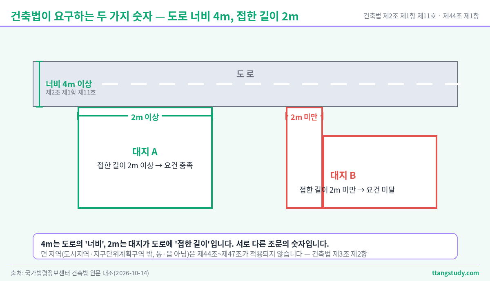

도로·맹지 법령 가이드
건축법이 말하는 '도로'와 접도 요건 — 4m와 2m가 어느 조문의 숫자인지부터

맹지·접도의무 기준 숫자 — 도로 너비 4m와 접한 길이 2m
| 항목 | 기준 | 근거 조문 |
|---|---|---|
| 도로의 너비 | 4m 이상 | 건축법 제2조 제1항 제11호 |
| 대지가 도로에 접할 길이 | 2m 이상 | 건축법 제44조 제1항 |
| 연면적 2,000㎡ 이상(공장 3,000㎡) | 너비 6m 도로에 4m 이상 접할 것 | 건축법 시행령 제28조 제2항 |
| 지형 조건·막다른 도로의 예외 너비 | 2m / 3m / 6m (읍·면 지역 4m) | 건축법 시행령 제3조의3 |
| 소요 너비에 못 미치는 도로의 건축선 | 중심선에서 1/2 후퇴 (반대쪽이 하천·경사지면 그쪽 경계선에서 소요 너비만큼) | 건축법 제46조 제1항 |
맹지인지 판단하는 순서 — 건축 가능 여부 확인 절차
- 소재지가 면 지역인지 먼저 확인합니다. 도시지역·지구단위계획구역 밖이면서 동·읍이 아닌 면 지역이면 건축법 제44조~제47조가 통째로 적용되지 않습니다(건축법 제3조 제2항). 읍 지역은 해당되지 않습니다.
- 접한 길이 건축법상 '도로'인지 확인합니다. 너비 4m 이상이면서 법령에 따라 고시된 도로(가목)이거나 시장·군수·구청장이 위치를 지정·공고한 도로(나목)여야 합니다(제2조 제1항 제11호). 지적도에 도로로 그려져 있다는 것만으로는 부족합니다.
- 접면 길이 2m를 확인합니다. 대지는 2m 이상이 도로에 접해야 하고(제44조 제1항), 연면적 2,000㎡ 이상 건축물은 너비 6m 도로에 4m 이상 접해야 합니다(시행령 제28조 제2항).
- 미달이면 도로 지정 가능성을 따집니다. 이해관계인 동의가 원칙이지만(제45조 제1항), 조례로 정한 '사실상의 통로'는 건축위원회 심의로 동의 없이 지정할 수 있습니다(제45조 제1항 제2호). 지정·변경된 도로는 도로관리대장에 기재·관리됩니다(제45조 제3항).
- 대지와 도로 사이에 구거가 있으면 소유자와 관리 주체를 먼저 확인합니다. 적용되는 허가 이름이 네 갈래로 갈립니다 — 공유수면 점용·사용허가(공유수면 관리 및 매립에 관한 법률 제8조 제1항), 농업생산기반시설 사용허가(농어촌정비법 제23조 제1항), 하천점용허가(하천법 제33조 제1항), 소하천 점용·사용 허가(소하천정비법 제14조 제1항).
- 점용·사용허가가 나도 끝이 아닙니다. 개발행위허가와 건축허가가 별도로 남습니다.
현황도로·접도의무에서 가장 많이 틀리는 네 가지
"접도의무가 4m다"
4m는 도로의 너비 기준(제2조 제1항 제11호)이고, 접해야 하는 길이는 2m(제44조 제1항)입니다. 서로 다른 조문의 숫자입니다.
"비도시지역이라 접도 규정이 없다"
건축법 제3조 제2항의 적용 제외는 도시지역·지구단위계획구역 밖인 것만으로는 부족하고 동·읍이 아닌 면 지역이어야 합니다. 읍 지역 임야·농지는 해당되지 않습니다.
"접도 기준은 지자체 조례로 완화된다"
2m 접도 원칙 자체에는 조례 위임이 없습니다. 조례가 들어오는 곳은 시행령 제28조 제2항의 제외 규모와 제45조 제1항 제2호의 '사실상의 통로' 지정입니다.
"현황도로가 있으니 건축이 된다"
'현황도로'는 법령 용어가 아닙니다. 건축법이 쓰는 표현은 '사실상의 통로'(제45조 제1항 제2호)이고, 조례 근거가 있어야 지정이 가능합니다. 질의할 때 이 표현과 조례 조항을 짚어 물으면 답이 분명해집니다.
용어별 상세
맹지
법령에 없는 말입니다 — 실제로 걸리는 것은 건축법의 접도 요건입니다
"맹지"는 법령에 없는 말입니다
국가법령정보센터에서 맹지를 찾으면 아무것도 나오지 않습니다. 법령명 검색도, 조문 본문 전수 검색도, 법제처 법령용어 데이터베이스도 전부 0건입니다. 건축법·건축법 시행령·건축법 시행규칙 전문에도 이 두 글자는 한 번도 나오지 않습니다.
맹지는 거래 현장에서 쓰는 말이고, 법적으로는 "건축법 제44조 제1항의 접도 요건을 충족하지 못하는 대지"라는 상태를 가리킵니다. 그래서 "이 땅이 맹지냐"가 아니라 "이 땅이 건축법상 도로에 2m 이상 접해 있느냐"로 물어야 답이 나옵니다.
숫자 두 개를 헷갈리면 안 됩니다 — 4m와 2m는 다른 조문입니다
흔히 "4m 도로에 2m 접해야 한다"고 외우는데, 이 두 숫자는 서로 다른 조문에서 나옵니다.
「건축법」 제2조①11호 — "도로"란 보행과 자동차 통행이 가능한 너비 4미터 이상의 도로(…)로서 다음 각 목의 어느 하나에 해당하는 도로나 그 예정도로를 말한다.
가. 국토계획법·도로법·사도법, 그 밖의 관계 법령에 따라 신설 또는 변경에 관한 고시가 된 도로
나. 건축허가 또는 신고 시에 시·도지사 또는 시장·군수·구청장이 위치를 지정하여 공고한 도로
「건축법」 제44조① 건축물의 대지는 2미터 이상이 도로에 접하여야 한다.
즉 4m는 도로의 너비, 2m는 대지가 도로에 닿는 길이입니다. 제44조 제1항 자체에는 도로 너비 수치가 아예 없습니다.
그리고 제2조 제1항 제11호의 구조를 보십시오. 고시되었거나 지정·공고된 것만 건축법상 도로입니다. 현장에 포장된 길이 있어도, 지적도에 길처럼 보여도, 가목·나목에 해당하지 않으면 건축법상 도로가 아닙니다. 맹지를 샀다는 사람 대부분이 여기서 걸립니다.
예외 너비는 시행령 제3조의3에 있습니다. 지형 조건으로 차량 통행 도로 설치가 곤란해 위치를 지정·공고한 구간은 3m(길이 10m 미만 막다른 도로는 2m), 그 외 막다른 도로는 길이에 따라 2m / 3m / 6m(도시지역이 아닌 읍·면지역은 4m)입니다.
면 지역이면 접도 규정 자체가 적용되지 않습니다
이것이 실무에서 가장 크게 갈리는 지점인데 의외로 덜 알려져 있습니다.
「건축법」 제3조② 국토계획법에 따른 도시지역 및 지구단위계획구역 외의 지역으로서 동이나 읍(동이나 읍에 속하는 섬의 경우에는 인구가 500명 이상인 경우만 해당)이 아닌 지역은 제44조부터 제47조까지, 제51조 및 제57조를 적용하지 아니한다.
조건이 두 개가 모두 충족돼야 합니다. ① 도시지역·지구단위계획구역 밖이고, ② 동·읍이 아닌 지역 — 사실상 면 지역입니다. 그래서 "비도시지역이면 맹지도 건축된다"는 말은 틀립니다. 비도시지역이라도 읍 지역이면 제44조가 그대로 적용됩니다.
적용이 제외되는 조문은 제44조(접도)뿐 아니라 제45조~제47조(도로 지정·건축선), 제51조(방화지구), 제57조(대지 분할 제한)까지입니다.
빠져나가는 길과 그 한계
- 민법 제219조 주위토지통행권 — 공로로 나갈 통로가 없을 때 주위 토지를 통행하고 필요하면 통로를 개설할 수 있습니다. 단 손해가 가장 적은 장소와 방법을 골라야 하고, 제2항에 따라 통행지 소유자의 손해를 보상해야 합니다.
- 민법 제220조(조문 제목은 "분할, 일부양도와 주위통행권") — 분할 때문에 공로에 통하지 못하게 된 토지는 다른 분할자의 토지를 통행할 수 있고 이 경우 보상 의무가 없습니다. 다만 통행 대상이 다른 분할자의 토지로 한정됩니다. 아무 인접지나 되는 것이 아닙니다.
- 대지사용승낙서 — 흔히 "토지사용승낙서"라고 부르지만 법령에 그 말은 없습니다. 법령에 실재하는 표현은 건축법 시행규칙의 "대지사용승낙서"이고, 그것도 가설건축물 축조신고 첨부서류 명칭으로만 나올 뿐 정의 규정은 없습니다.
- 구거를 건너 진입로 확보 — 국유 구거는 공유수면법 제8조 제1항의 점용·사용허가, 농업용 용·배수로는 농어촌정비법 제23조 제1항의 (목적 외) 사용허가로 창구가 갈립니다.
여기서 분명히 해야 할 것이 있습니다. 민법상 통행권을 얻었다고 그 길이 건축법상 도로가 되지는 않습니다. 건축법 제2조 제1항 제11호는 도로를 "고시된 것" 또는 "허가권자가 위치를 지정·공고한 것"으로 한정하고 있고, 민법 제219조의 통행권은 둘 중 어느 것도 아니기 때문입니다. 다만 통행권 확보가 제44조 제1항 단서 제1호의 "출입에 지장이 없다고 인정되는 경우"에 해당하는지는 조문이 "인정되는 경우"라고만 적어 허가권자의 판단에 맡겨 두었습니다. 조문만으로는 가부를 단정할 수 없고, 해당 지자체 건축과의 판단을 받아야 합니다.
근거 법령
| 조문 | 핵심 내용 |
|---|---|
| 건축법 제2조 제1항 제11호 | 도로 = 너비 4m 이상 + 고시되었거나 위치 지정·공고된 것 |
| 건축법 제44조 제1항 | 대지는 2m 이상이 도로에 접할 것 (단서 3개: 출입 지장 없음·공지·농막) |
| 건축법 시행령 제3조의3 | 지형 조건·막다른 도로의 예외 너비 (2m / 3m / 6m, 읍·면 4m) |
| 건축법 제3조 제2항 | 도시지역·지구단위계획구역 밖이면서 동·읍이 아닌 지역은 제44조~제47조 적용 제외 |
| 민법 제219조 | 주위토지통행권 — 손해 최소 장소·방법, 통행지 소유자에게 손해 보상 |
| 민법 제220조 | 분할·일부양도로 생긴 통행권 — 다른 분할자의 토지에 한정, 보상 의무 없음 |
| 공유수면법 제8조 제1항 | 국유 구거를 건너는 교량 등은 공유수면 점용·사용허가 |
| 농어촌정비법 제23조 제1항 | 농업용 용·배수로는 농업생산기반시설 (목적 외) 사용허가 |
계약 전에 확인할 것
- 토지이용계획확인서로 도시지역·지구단위계획구역 여부를 보고, 아니라면 행정구역이 면인지 읍인지 확인합니다. 읍이면 접도 규정이 그대로 적용됩니다.
- 지적도의 길이 건축법상 도로인지 지자체 건축과의 '도로관리대장'으로 확인합니다. 포장 여부나 통행 사실로는 판단할 수 없습니다.
- 진입로로 쓸 땅의 등기사항증명서를 떼어 소유자와 권리관계를 확인합니다. 공유 지분이면 전원과 협의해야 합니다.
- 구거를 건너야 한다면 국유인지 농업용인지부터 가리고, 해당 관청에 점용·사용허가 가능성을 먼저 타진합니다.
- 연면적 2,000㎡(공장 3,000㎡) 이상을 지을 계획이면 더 무거운 기준이 붙습니다 — 아래 접도의무 항목을 함께 보십시오.
접도의무
조문 제목은 "대지와 도로의 관계" — 규모가 커지면 기준이 무거워집니다
법령에 "접도의무"라는 말은 없습니다
건축법 전문에 접도의무라는 단어는 한 번도 나오지 않습니다. 건축법에 등장하는 "접도"는 제69조 제2항 제3호의 접도구역(도로법상 제도) 단 한 번뿐이고, 이것은 접도의무와 전혀 다른 제도입니다.
실제 조문 제목은 건축법 제44조(대지와 도로의 관계)입니다. 조문을 찾을 때는 이 제목으로 찾아야 합니다.
「건축법」 제44조① 건축물의 대지는 2미터 이상이 도로(자동차만의 통행에 사용되는 도로는 제외)에 접하여야 한다. 다만, 다음 각 호의 어느 하나에 해당하면 그러하지 아니하다.
1. 해당 건축물의 출입에 지장이 없다고 인정되는 경우
2. 건축물의 주변에 대통령령으로 정하는 공지가 있는 경우
3. 「농지법」 제2조제1호나목에 따른 농막을 건축하는 경우
제2호의 "공지"는 시행령 제28조 제1항이 정합니다 — 광장·공원·유원지, 그 밖에 관계 법령에 따라 건축이 금지되고 공중의 통행에 지장이 없는 공지로서 허가권자가 인정한 것입니다.
규모가 커지면 기준이 바뀝니다 — 6m 도로에 4m
「건축법 시행령」 제28조② 연면적의 합계가 2천 제곱미터(공장인 경우에는 3천 제곱미터) 이상인 건축물(축사, 작물 재배사, 그 밖에 이와 비슷한 건축물로서 건축조례로 정하는 규모의 건축물은 제외)의 대지는 너비 6미터 이상의 도로에 4미터 이상 접하여야 한다.
자주 틀리는 부분이 두 군데입니다. 접하는 길이는 6m가 아니라 4m이고, 공장은 3,000㎡ 기준입니다. 그리고 축사·작물재배사 등은 건축조례로 정하는 규모까지는 제외됩니다 — 조례가 개입하는 지점은 여기이지, 2m 접도 원칙 자체가 조례로 완화되거나 강화되는 것이 아닙니다.
도로가 없으면 지정받는 길 — 제45조
건축법상 도로가 없는 경우, 허가권자가 위치를 지정·공고하면 도로가 됩니다(제2조①11호 나목). 그 절차가 제45조입니다.
「건축법」 제45조① 허가권자는 … 도로의 위치를 지정·공고하려면 그 도로에 대한 이해관계인의 동의를 받아야 한다. 다만, 다음 각 호의 어느 하나에 해당하면 이해관계인의 동의를 받지 아니하고 건축위원회의 심의를 거쳐 도로를 지정할 수 있다.
1. 허가권자가 이해관계인이 해외에 거주하는 등의 사유로 동의를 받기가 곤란하다고 인정하는 경우
2. 주민이 오랫 동안 통행로로 이용하고 있는 사실상의 통로로서 해당 지방자치단체의 조례로 정하는 것인 경우
원칙은 동의입니다. 동의 없이 가려면 ① 위 각 호에 해당하고 ② 건축위원회 심의를 거쳐야 하며, 제2호는 추가로 ③ 해당 지자체 조례에 근거가 있어야 합니다. 조례에 규정이 없으면 아무리 오래 쓴 길이어도 이 경로로는 지정되지 않습니다.
도로가 좁으면 집이 뒤로 물러납니다 — 건축선
「건축법」 제46조① … 건축선은 대지와 도로의 경계선으로 한다. 다만, 제2조제1항제11호에 따른 소요 너비에 못 미치는 너비의 도로인 경우에는 그 중심선으로부터 그 소요 너비의 2분의 1의 수평거리만큼 물러난 선을 건축선으로 하되, 그 도로의 반대쪽에 경사지, 하천, 철도, 선로부지, 그 밖에 이와 유사한 것이 있는 경우에는 그 경사지 등이 있는 쪽의 도로경계선에서 소요 너비에 해당하는 수평거리의 선을 건축선으로 하며 …
도로 너비가 4m에 못 미치면 중심선에서 2m 물러난 선이 건축선입니다. 양쪽 땅이 각각 2m씩 내주는 셈입니다. 그런데 도로 반대쪽이 하천이나 경사지면 반대쪽은 내줄 수 없으므로 내 땅에서 4m 전부를 물러나야 합니다. 건축선과 도로 사이 땅은 내 소유지만 대지면적에서 빠지므로, 건폐율·용적률 계산의 모수 자체가 줄어듭니다.
제47조는 그 건축선을 넘지 못하게 합니다 — 건축물과 담장은 건축선의 수직면을 넘을 수 없고(지표 아래는 제외), 도로면에서 높이 4.5m 이하의 출입구·창문은 여닫을 때 건축선을 넘지 않는 구조여야 합니다.
도로 모퉁이에 있는 대지는 추가로 물러나야 합니다. 시행령 제31조 제1항이 너비 8m 미만 도로의 교차 지점에서 교차각과 도로 너비에 따라 2~4m를 잘라내도록 정하고 있습니다. 그리고 제2항에 따라 도시지역에서는 4m 이하의 범위에서 건축선을 따로 지정할 수도 있습니다.
면 지역이면 이 규정들이 통째로 빠집니다
「건축법」 제3조② 국토계획법에 따른 도시지역 및 지구단위계획구역 외의 지역으로서 동이나 읍(동이나 읍에 속하는 섬의 경우에는 인구가 500명 이상인 경우만 해당)이 아닌 지역은 제44조부터 제47조까지, 제51조 및 제57조를 적용하지 아니한다.
적용 제외는 두 조건을 모두 만족해야 합니다 — 도시지역·지구단위계획구역 밖이면서, 동·읍이 아닌 지역(사실상 면 지역)이어야 합니다. 비도시지역이라는 것만으로는 부족하고, 읍 지역이면 제44조가 그대로 적용됩니다. 이 하나를 잘못 읽어 임야를 사고 건축허가가 막히는 경우가 적지 않습니다.
제3항은 범위가 다릅니다. 국토계획법 제47조 제7항에 따른 건축물·공작물을 도시·군계획시설로 결정된 도로의 예정지에 건축하는 경우에는 제45조부터 제47조까지만 적용 제외되고, 제44조는 그대로 적용됩니다.
근거 법령
| 조문 | 핵심 내용 |
|---|---|
| 건축법 제44조 제1항 | 대지는 2m 이상이 도로에 접할 것 — 단서 3개 (출입 지장 없음·공지·농막) |
| 건축법 시행령 제28조 제2항 | 연면적 2,000㎡(공장 3,000㎡) 이상은 너비 6m 도로에 4m 이상 접할 것 |
| 건축법 제45조 제1항 | 도로 지정은 이해관계인 동의가 원칙, 예외는 건축위원회 심의 + 조례 근거 |
| 건축법 제46조 제1항 | 소요 너비 미달 도로는 중심선에서 1/2 후퇴, 반대쪽이 하천·경사지면 전부 후퇴 |
| 건축법 제3조 제2항 | 도시지역·지구단위계획구역 밖이면서 면 지역이면 제44조~제47조 적용 제외 |
계약 전에 확인할 것
- 대지가 닿은 길이 건축법상 도로인지부터 확인합니다 — 지자체 건축과의 도로관리대장으로 봅니다.
- 지으려는 건축물의 연면적 합계를 먼저 계산합니다. 2,000㎡(공장 3,000㎡)를 넘으면 6m 도로에 4m 접도 기준입니다.
- 도로 너비가 4m 미만이면 건축선 후퇴로 줄어드는 대지면적을 계산해 건폐율·용적률을 다시 따집니다.
- 도로 지정을 받아야 한다면 해당 지자체 건축조례에 '사실상의 통로' 규정이 있는지 먼저 확인합니다. 없으면 이해관계인 전원 동의가 필요합니다.
현황도로
법령에는 없는 말입니다 — 건축법이 쓰는 표현은 '사실상의 통로'
"현황도로"는 법령 용어가 아닙니다
먼저 짚고 가야 할 것이 있습니다. 건축법·건축법 시행령·건축법 시행규칙, 도로법, 사도법, 농어촌도로 정비법, 국토의 계획 및 이용에 관한 법률 어디에도 "현황도로"라는 단어는 나오지 않습니다.
유일한 법령상 정의는 산림청 고시(「산지전용시 기존도로를 이용할 필요가 없는 시설 및 기준」)에 있는데, 이것은 법률이 아니라 행정규칙이고 산지전용 진입로를 판단할 때만 쓰는 정의입니다.
건축허가 맥락에서 건축법이 쓰는 표현은 "사실상의 통로"입니다. 지자체 조례도 대개 "사실상의 통로" 또는 "현황통로"라고 씁니다. 이 차이를 알고 있으면 공무원과 말이 통하고, 모르면 엉뚱한 답을 듣습니다.
건축법이 말하는 '도로'
「건축법」 제2조 ① 11. "도로"란 보행과 자동차 통행이 가능한 너비 4미터 이상의 도로(지형적으로 자동차 통행이 불가능한 경우와 막다른 도로의 경우에는 대통령령으로 정하는 구조와 너비의 도로)로서 다음 각 목의 어느 하나에 해당하는 도로나 그 예정도로를 말한다.
가. 「국토의 계획 및 이용에 관한 법률」, 「도로법」, 「사도법」, 그 밖의 관계 법령에 따라 신설 또는 변경에 관한 고시가 된 도로
나. 건축허가 또는 신고 시에 시·도지사 또는 시장·군수·구청장이 위치를 지정하여 공고한 도로
핵심은 가목과 나목 중 하나에 들어가야만 건축법상 도로라는 점입니다. 사람들이 수십 년 다녔다는 사실만으로는 자동으로 도로가 되지 않습니다. 그리고 대지는 이 도로에 2m 이상 접해야 합니다.
「건축법」 제44조(대지와 도로의 관계) ① 건축물의 대지는 2미터 이상이 도로(자동차만의 통행에 사용되는 도로는 제외한다)에 접하여야 한다. 다만, 다음 각 호의 어느 하나에 해당하면 그러하지 아니하다.
1. 해당 건축물의 출입에 지장이 없다고 인정되는 경우
2. 건축물의 주변에 대통령령으로 정하는 공지가 있는 경우
3. 「농지법」 제2조제1호나목에 따른 농막을 건축하는 경우
동의 없이 도로로 지정할 수 있는 예외
그러면 오래 써 온 길은 영영 안 되느냐 — 길이 있습니다. 건축법 제45조 제1항 단서입니다.
「건축법」 제45조(도로의 지정·폐지 또는 변경) ① 허가권자는 제2조제1항제11호나목에 따라 도로의 위치를 지정·공고하려면 … 그 도로에 대한 이해관계인의 동의를 받아야 한다. 다만, 다음 각 호의 어느 하나에 해당하면 이해관계인의 동의를 받지 아니하고 건축위원회의 심의를 거쳐 도로를 지정할 수 있다.
1. 허가권자가 이해관계인이 해외에 거주하는 등의 사유로 이해관계인의 동의를 받기가 곤란하다고 인정하는 경우
2. 주민이 오랫 동안 통행로로 이용하고 있는 사실상의 통로로서 해당 지방자치단체의 조례로 정하는 것인 경우
제2호가 이른바 현황도로 인정의 근거입니다. 다만 요건이 세 겹입니다.
- 주민이 오랫동안 통행로로 이용해 온 사실상의 통로일 것
- 그것이 해당 지방자치단체 조례로 정하는 것일 것
- 건축위원회 심의를 거칠 것
즉 땅 주인의 동의를 못 받아도 길이 열릴 수 있지만, 조례가 그 유형을 정해 두고 있어야 하고 심의를 통과해야 합니다.
조례는 지자체마다 다릅니다
조례가 무엇을 '사실상의 통로'로 인정하는지가 결국 승부처입니다. 예를 들어 경기도 양평군 건축 조례 제24조는 주민들이 통로로 쓰는 제방·복개 하천·구거, 같은 통로로 이미 건축허가가 난 적이 있는 경우, 관계 법령에 따라 통행로로 허가받은 부지, 주민대표 10명 이상이 인정하는 도로, 기존 농로·임도 등을 열거하고 있습니다.
이것은 어디까지나 한 지자체의 예시입니다. 다른 시·군은 열거 항목도 요구 서류도 다릅니다. 그래서 "현황도로면 건축허가 난다"는 말은 어디서도 일반화할 수 없습니다.
한 가지 더 — 통로 너비가 4m에 못 미치면 건축선이 뒤로 물러납니다. 건축법 제46조 제1항에 따라 도로 중심선에서 소요 너비의 1/2만큼 물러난 선이 건축선이 되므로, 내 땅의 쓸 수 있는 면적이 실제로 줄어듭니다.
근거 법령
| 조문 | 핵심 내용 |
|---|---|
| 건축법 제2조 제1항 제11호 | 도로의 정의 — 너비 4m 이상 + 고시된 도로 또는 지정·공고된 도로 |
| 건축법 제44조 제1항 | 대지는 2m 이상 도로에 접해야 함 (예외 3가지) |
| 건축법 제45조 제1항 제2호 | 사실상의 통로 — 조례로 정하면 동의 없이 건축위원회 심의로 도로 지정 가능 |
| 건축법 제45조 제3항 | 지정·변경한 도로는 도로관리대장에 기재·관리 |
| 건축법 제46조 제1항 | 소요 너비 미달 도로는 중심선에서 1/2 물러난 선이 건축선 |
계약 전에 확인할 것
- 해당 시·군·구 건축 조례에서 '사실상의 통로' 또는 '도로의 지정' 조문을 찾아 열거 항목을 확인합니다.
- 그 길로 이미 건축허가가 난 사실이 있는지 확인합니다. 대부분의 조례가 이 경우를 인정합니다.
- 도로관리대장에 등재된 길인지 지자체에 조회합니다. 등재돼 있으면 이미 건축법상 도로입니다.
- 폭이 4m 미만이면 건축선 후퇴로 줄어드는 면적을 계산에 넣습니다.
구거
용수·배수용 소규모 수로 부지 — 맹지 탈출의 변수이자, 허가 이름이 네 갈래로 갈리는 곳
지목으로서의 구거
구거(溝渠)는 28개 지목 가운데 하나입니다. 정의는 시행령에 있습니다.
「공간정보의 구축 및 관리 등에 관한 법률 시행령」 제58조(지목의 구분) 18. 구거
용수(用水) 또는 배수(排水)를 위하여 일정한 형태를 갖춘 인공적인 수로·둑 및 그 부속시설물의 부지와 자연의 유수(流水)가 있거나 있을 것으로 예상되는 소규모 수로부지
바로 앞 제17호가 '하천'인데 정의가 "자연의 유수가 있거나 있을 것으로 예상되는 토지"입니다. 구거와 하천을 가르는 것은 결국 규모와 인공성입니다. 이 구분이 뒤에 나올 허가 종류를 가릅니다.
맹지와 도로 사이에 구거가 있을 때
토지 투자에서 구거가 문제가 되는 상황은 거의 하나로 모입니다 — 내 땅과 도로 사이에 구거가 끼어 있는 경우입니다. 이때는 구거 위에 다리나 관로를 놓아 진입로를 만들 수 있느냐가 전부입니다.
여기서 많은 자료가 "구거 점용허가를 받으면 된다"고 설명하는데, '구거 점용허가'라는 이름의 허가는 법령에 없습니다. 실무에서 쓰는 통칭일 뿐이고, 실제로 받는 허가는 그 구거가 어느 법의 적용을 받는지에 따라 달라집니다.
허가 이름이 갈리는 네 갈래
기준이 되는 조문은 「공유수면 관리 및 매립에 관한 법률」 제3조 제1항입니다. 하천법·소하천정비법이 적용되는 공유수면과 농업생산기반시설 안의 공유수면은 공유수면법 적용에서 빠진다고 정해 두었습니다.
| 구거의 성격 | 받는 허가 | 근거 |
|---|---|---|
| 국유이고 다른 법 적용을 받지 않는 구거 | 공유수면 점용·사용허가 | 공유수면법 제8조 제1항 (교량 등 인공구조물 신축) |
| 농업용 용·배수로 (농업생산기반시설) | 농업생산기반시설 사용허가 (실무상 '목적외사용승인') | 농어촌정비법 제23조 제1항 |
| 하천구역에 들어가는 경우 | 하천점용허가 | 하천법 제33조 제1항 |
| 소하천구역에 들어가는 경우 | 점용·사용 허가 | 소하천정비법 제14조 제1항 |
창구도 달라집니다. 공유수면은 통상 시장·군수·구청장이, 농업생산기반시설은 관리자가 지자체면 시장·군수·구청장이지만 한국농어촌공사가 관리자면 공사가 창구가 됩니다(농어촌정비법 제23조 제1항 단서).
지목이 구거가 아니어도 구거일 수 있습니다
법제처 법령해석(안건번호 14-0280, 2014. 10. 14.)은 지목이 구거가 아니더라도 국유 토지에 사실상 구거가 있으면 공유수면에 해당한다고 회답했습니다.
공유수면은 소위 자연공물로서 그 자체가 직접 공공의 사용에 제공되는 것이므로 별도의 공용개시행위가 필요하지 않다 … 따라서 국유의 토지에 존재하는 하천, 호소, 구거 등의 수류가 공유수면법에 따른 공유수면에 해당하는지 여부는 해당 수류의 형상, 공중의 이용관계 등을 고려하여 그 실질에 따라 판단하여야 할 것입니다.
반대로 중요한 제한이 하나 있습니다. 공유수면이 되려면 국유여야 합니다(공유수면법 제2조 제1호 다목). 사유 구거는 공유수면법 대상이 아니고, 지자체 소유라면 공유재산 관련 절차를 따로 밟아야 합니다.
근거 법령
| 조문 | 핵심 내용 |
|---|---|
| 공간정보의 구축 및 관리 등에 관한 법률 제67조 제1항 | 지목 28종에 구거 포함 |
| 같은 법 시행령 제58조 제18호 | 구거의 정의 |
| 공유수면 관리 및 매립에 관한 법률 제2조 제1호 다목 | 국유인 구거는 공유수면 |
| 같은 법 제8조 제1항 | 공유수면 점용·사용허가 — 교량 등 인공구조물 신축 포함 |
| 같은 법 제3조 제1항 | 하천법·소하천정비법·농어촌정비법 적용 시 공유수면법 적용 배제 |
| 농어촌정비법 제23조 제1항 | 농업생산기반시설의 사용허가 |
| 하천법 제33조 제1항 | 하천점용허가 |
| 소하천정비법 제14조 제1항 | 소하천 점용·사용 허가 |
계약 전에 확인할 것
- 지적도에서 내 땅과 도로 사이 구거의 폭과 길이를 확인합니다.
- 등기사항증명서로 그 구거의 소유자가 국가인지 지자체인지 개인인지 확인합니다. 여기서 적용 법령이 갈립니다.
- 관할 시·군·구에 '이 구거의 관리 주체와 받아야 할 허가 이름'을 직접 질의합니다. 농업용이면 한국농어촌공사일 수 있습니다.
- 점용료 수준과 허가 기간, 갱신 조건을 함께 확인합니다.
※ 위 조문은 2026-10-13 / 2026-10-14 국가법령정보센터 원문과 대조한 내용입니다. 법령은 개정될 수 있고, 조례로 기준이 달라지는 항목은 해당 시·군·구 조례를 직접 확인하십시오.
이 주제로 막힌 물건이 있으십니까? 커뮤니티에 상황을 남겨주시면 확인 순서를 같이 짚어 드립니다.
발행 2026-11-14 · 최종 확인 2026-11-17